Automation Testing Practice Platform
A desktop (PC screen) visual guide. Every screen below is shown at full 1440 px width and annotated so you can see exactly what each control does.
The app ships with two switchable interfaces that share the same routes and data — a Modern shell (floating header + bottom command dock) and a Classic shell (left console rail + flyouts).
1 · The Modern shell — header & command dock
The Modern skin keeps chrome out of the way: a floating top header and a macOS-style dock at the bottom.
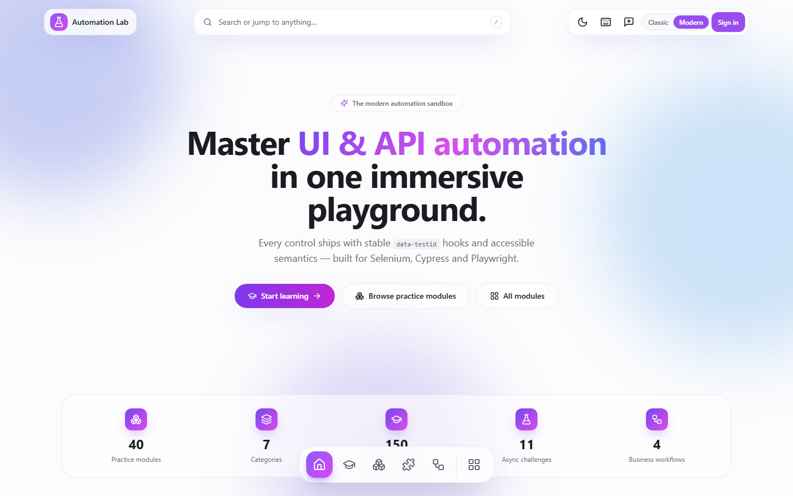
What's in this screen
- Brand capsule (top-left) — flask logo + “Automation Lab”; clicking it returns Home.
- Spotlight search (center) — “Search or jump to anything…”. Opens the command palette; the
/hint shows the keyboard shortcut. - Actions capsule (top-right), left → right: theme light/dark toggle · keyboard Shortcuts & progress · message Feedback · Classic | Modern interface switch · Sign in (or your avatar menu when signed in).
- Command dock (bottom, floating) — primary navigation: Home, Learn, Practice, Challenges, Workflows, a divider, then the bento “All apps” launcher. The active section is filled with the violet→fuchsia gradient; hovering a tile raises it and shows its label.
2 · Modern home (dashboard)
An immersive landing page: hero, live counters, recents, the full course catalog and practice categories.
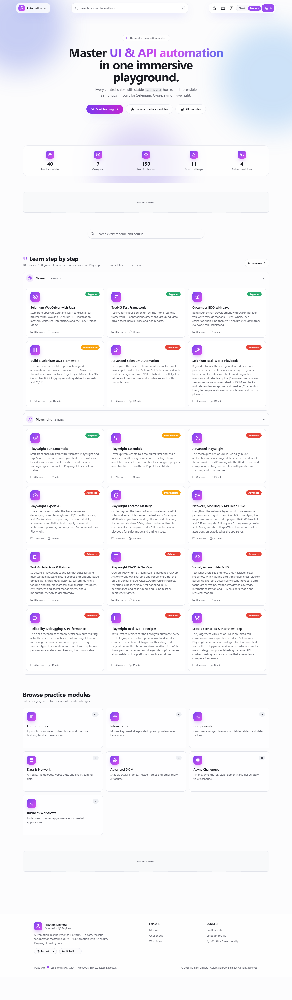
What's in this screen
- Hero — badge “The modern automation sandbox”, headline “Master UI & API automation in one immersive playground”, and a note that every control ships with stable
data-testidhooks for Selenium, Cypress and Playwright. - Primary CTAs — Start learning (→ Learning), Browse practice modules (→ Practice) and All modules (opens the bento launcher).
- Live stats bar — five counters computed from config: 40 Practice modules · 7 Categories · 150 Learning lessons · 11 Async challenges · 4 Business workflows.
- Search field — filters both modules and courses as you type.
- Recently viewed — quick links back to modules you opened (e.g. “Form & Validation”).
- Learn step by step — the full catalog grouped by tool family: Selenium (6 courses) and Playwright (12 courses). Each card shows level Beginner Intermediate Advanced, lesson count and total minutes.
- Browse practice modules — category cards with live counts: Form Controls (12), Interactions (6), Components (9), Data & Network (9), Advanced DOM (4), Async Challenges (11), Business Workflows (4).
3 · Explore hub
A guided chooser that routes you to the right area: learn, practise, challenge or build.
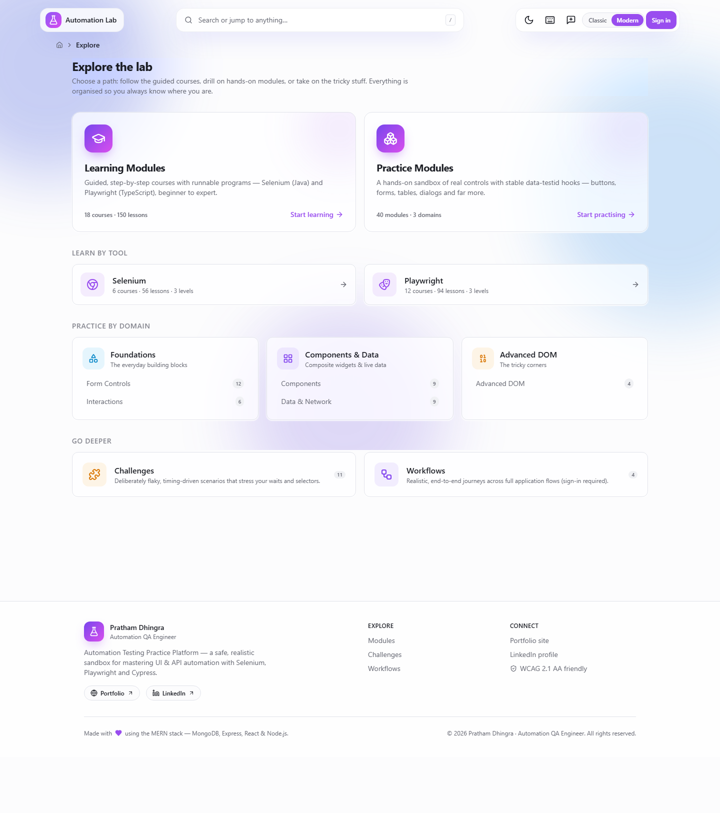
What's in this screen
- Path cards — large entry points for Learning (guided courses) and Practice (hands-on modules), each with its own live counts.
- Challenges & Workflows — secondary entries for deliberately flaky scenarios and end-to-end business journeys.
- Meta line — reiterates the catalog size (courses · lessons) so you know the scope before diving in.
4 · Learning catalog
Courses are segregated by tool family, then by level — so you pick a stack and start at the right place.
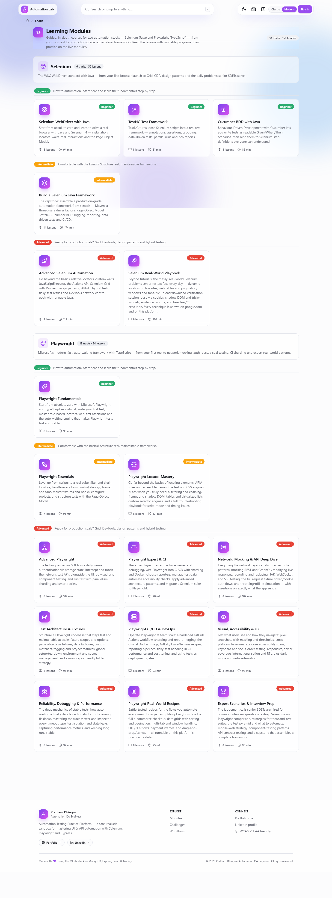
What's in this screen
- Header — “{N} tracks · 150 lessons” summary across Selenium & Playwright.
- Tool sections — Selenium (Java: WebDriver, TestNG, Cucumber, a full framework, advanced & real-world) and Playwright (TypeScript: fundamentals → locators, network mocking, CI, architecture, expert prep).
- Course cards — each shows a title, summary, level badge, lesson count and estimated minutes. Browsing is public; opening a full lesson requires signing in.
5 · Course / track page
Every course lists its lessons with duration and level; signed-in users open the full content.
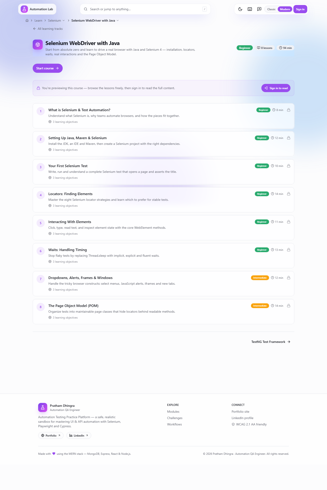
What's in this screen
- Course header — title, subtitle, level, total lessons and minutes.
- Lesson list — each row shows the lesson name, an estimated duration and its level; a lock icon marks content that opens after sign-in.
- Practice links — many lessons reference matching practice modules so you can try each concept against real controls.
6 · Practice catalog
The hands-on sandbox, grouped into categories. Every control exposes a stable data-testid.
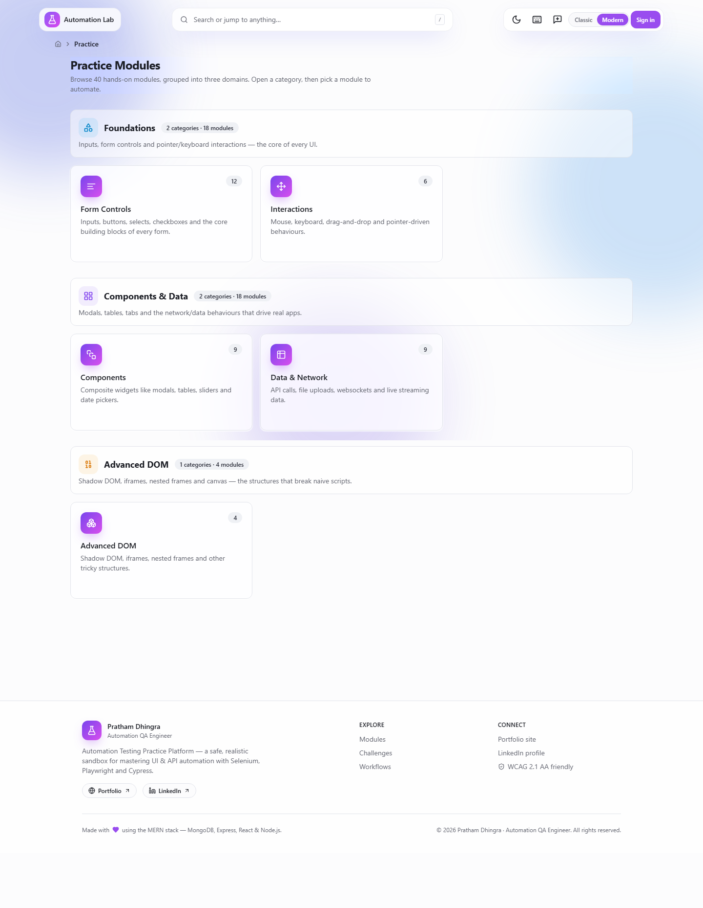
What's in this screen
- Category cards — Form Controls, Interactions, Components, Data & Network, Advanced DOM, Async Challenges and Business Workflows, each with a live module count.
- Card body — a one-line description of what that category drills (e.g. “Mouse, keyboard, drag-and-drop and pointer-driven behaviours”).
- Selecting a card opens its landing page listing every module in that category.
7 · Inside a module — Form & Validation
A representative module showing live validation, gated submit and a result panel.
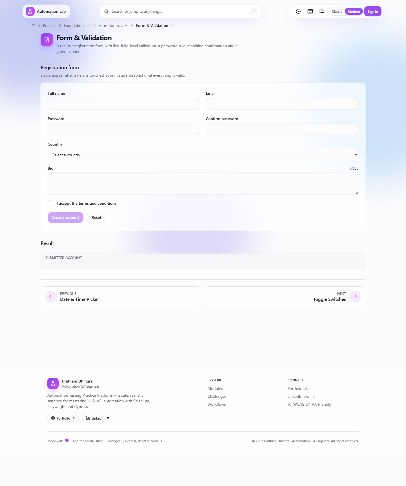
What's in this screen
- Breadcrumbs — show Practice → category → module so you always know where you are.
- Form fields — name, email, a password with rules, a matching confirmation, country select, a bio counter and a terms checkbox; errors appear once a field is touched.
- Gated submit — stays disabled until the whole form is valid.
- Result panel — on success, the submitted values are echoed back so a test can assert the outcome.
- Every input has a stable
data-testidand proper ARIA roles for reliable selectors.
8 · Command palette (press /)
A keyboard-first jump menu across every module and course.
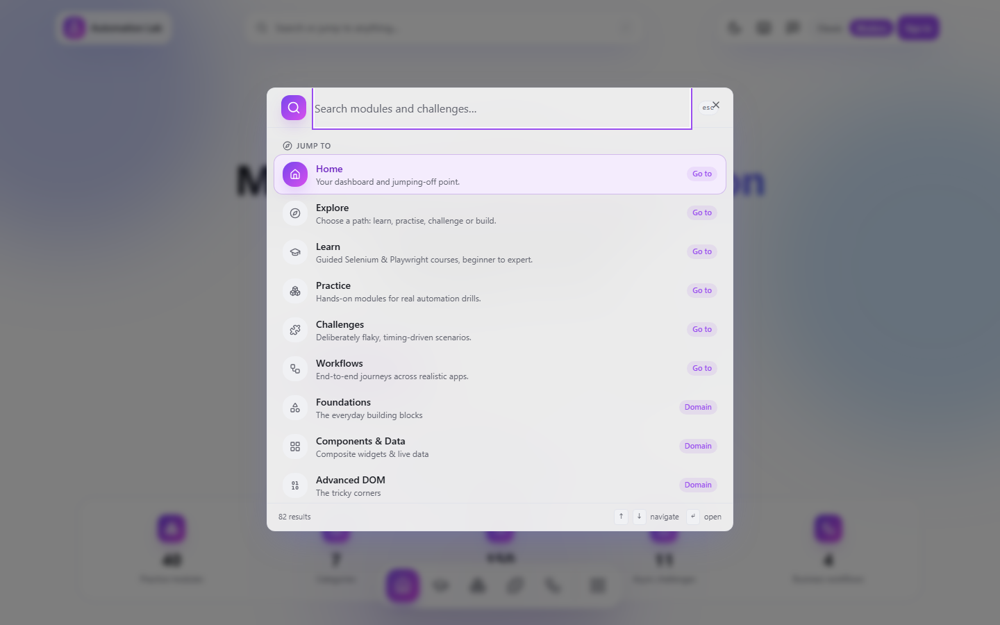
What's in this screen
- Search input — type to fuzzy-match modules, courses and quick actions.
- Grouped results — jump targets are organised so you can arrow-key down and press Enter to navigate.
- Keyboard hints —
↑/↓to move,Enterto open,Escto close.
9 · Shortcuts & progress (press ?)
A single dialog for keyboard shortcuts and your local learning/practice progress.
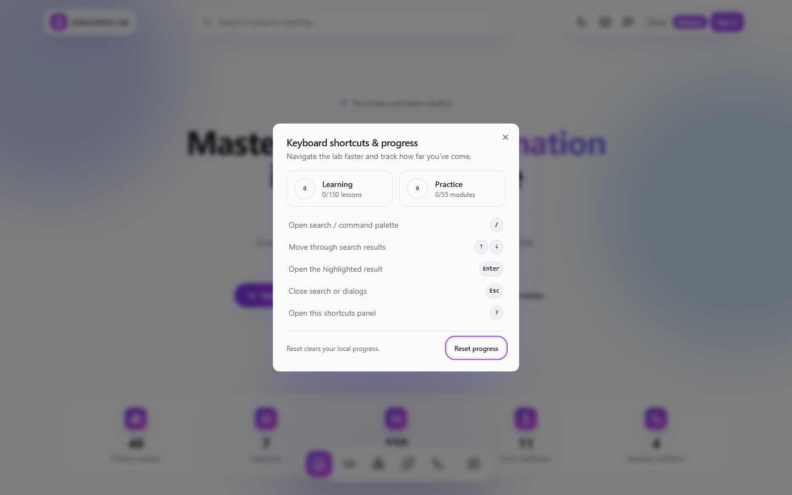
What's in this screen
- Progress rings — two rings show how many Learning lessons and Practice modules you've completed (stored locally).
- Shortcut list —
/open search,↑/↓move,Enteropen,Escclose,?open this panel. - Reset progress — clears your locally-stored completion state.
10 · App launcher (bento)
The bento icon in the dock opens a full app/module launcher with search and pinning.
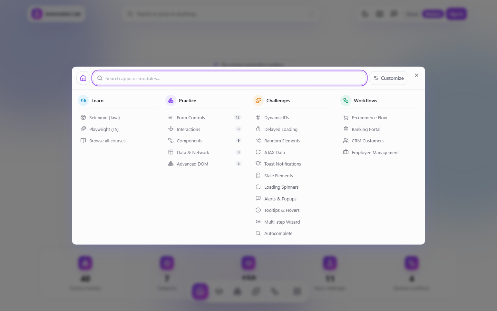
What's in this screen
- Search — filter all destinations instantly.
- Tiles — quick access to top-level areas and individual modules.
- Pinned / customise — keep your most-used destinations within one click.
11 · Sign in
Credentials post in the request body — never in the URL. The SPA redirects you back to the page you wanted.
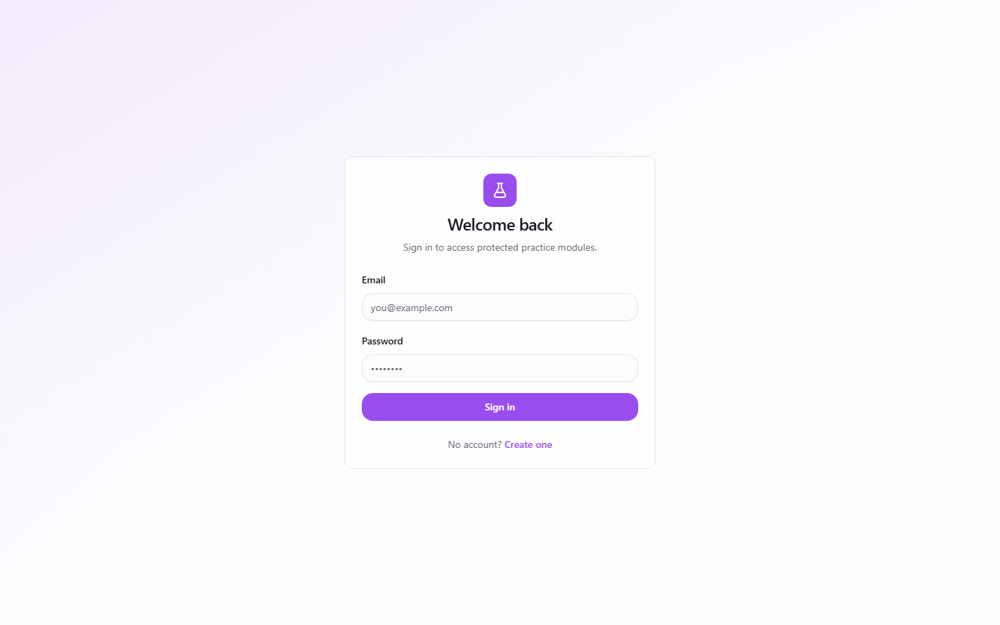
What's in this screen
- Email + password fields with a single Sign in button and a “Create one” link to register.
- Why sign in — full lesson content and protected actions unlock after authentication.
sequenceDiagram
actor User
participant SPA as React SPA
participant API as Express API
participant DB as MongoDB
User->>SPA: Submit email + password
SPA->>API: POST /api/auth/login (body)
API->>DB: Verify user + password hash
DB-->>API: User record
API-->>SPA: access token + refresh cookie
SPA-->>User: Return to the requested page
12 · The Classic shell — console rail
The Classic skin uses a slim left icon rail with slide-out flyouts and a minimal command header.
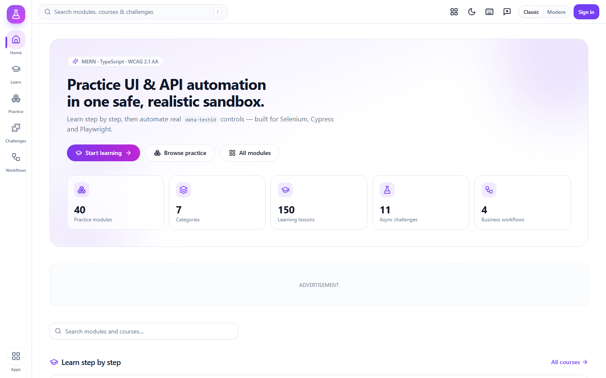
What's in this screen
- Left rail — the brand flask plus icon items: Home, Learn, Practice, Challenges, Workflows (and Admin for admins), with an Apps launcher pinned at the bottom. The active item shows a violet accent bar.
- Console header — a wide search field (with the
/hint) plus the same quick actions: launcher, theme, Shortcuts & progress, Feedback, the Classic | Modern switch and Sign in. - Breadcrumbs — sit just under the header to track your location.
13 · Classic home
The same content as the Modern home, rendered in the calmer console layout.
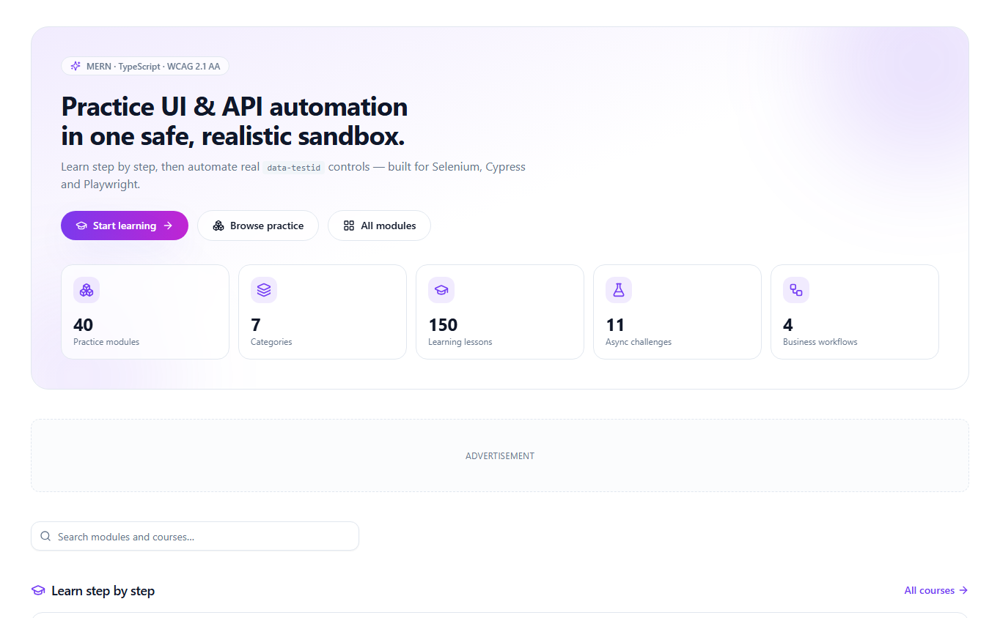
What's in this screen
- Hero — “Practice UI & API automation in one safe, realistic sandbox”, with Start learning, Browse practice and All modules actions.
- Stat tiles — the same live counts as the Modern home, laid out as cards.
- Learn step by step & Browse practice modules — identical catalog and category grids, so anything you automate works in either skin.
14 · Classic rail flyout
Clicking Learn (or Practice) on the rail slides out a panel with the full hierarchy.
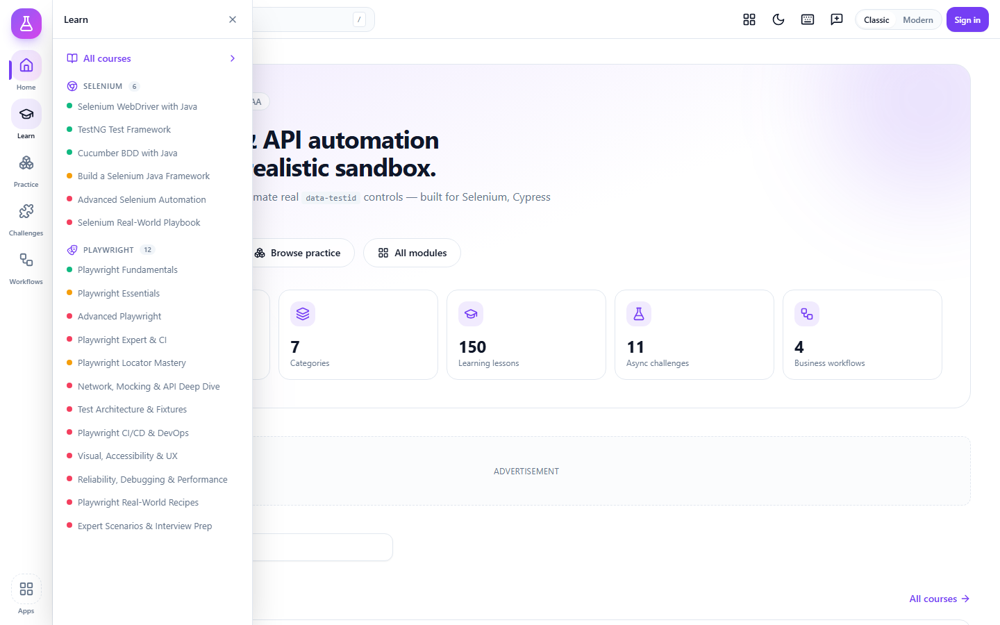
What's in this screen
- Flyout header — names the section (Learn / Practice) with a close button.
- Grouped tree — for Learn: Selenium and Playwright families, each listing their tracks with a level dot and a count pill.
- “All courses” shortcut — jumps straight to the full catalog; clicking any item closes the flyout and navigates.